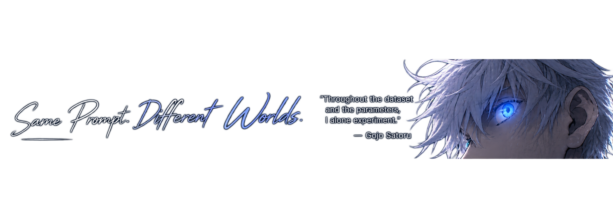
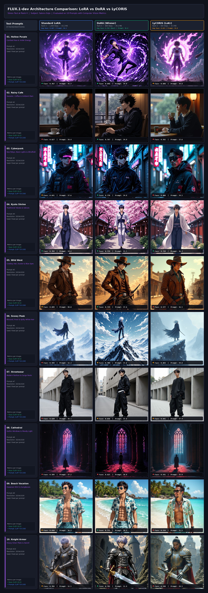

Global Seed Library
Favorite Generations
⚖️ FLUX.1-dev PEFT Stress-Test Benchmark
Constrained Capacity Evaluation (Rank 4, Alpha 4) across 10 diverse prompts comparing
Standard LoRA (1,000 steps), DoRA (600 steps), and LyCORIS LoKr (600 steps).
Ground truth: 25 reference portraits in dataset/gojo/.
| # ID | Challenge Scene | LoRA Face (CLIP-I) | DoRA Face (CLIP-I) | LyCORIS Face (CLIP-I) | Identity Winner | LoRA Prompt (CLIP-T) | DoRA Prompt (CLIP-T) | LyCORIS Prompt (CLIP-T) |
|---|
Master Composite Benchmark Grid (1624 × 4570 px)
Click to open full-scale high-resolution view.

⚡ FLUX.1-dev Architecture & Fine-Tuning Guide
A clear, human-readable breakdown of Black Forest Labs' 12-Billion Parameter Foundation Model and how our LoRA, DoRA, and LyCORIS adapters hook directly into its attention layers.
Stage 1: Prompt Understanding (Dual AI Encoders)
Google T5 + CLIP-L
Instead of using just one text reader, FLUX uses two distinct language models:
• Google T5-XXL (4.7 Billion params): Reads long, detailed prompts (like clothing descriptions, lighting, weather, and actions).
• CLIP-L: Captures the overall visual art style, character archetype, and color harmony.
Stage 2: Image Compression (16-Channel VAE)
8× Spatial CompressionGenerating a full 1024×1024 raw pixel image directly would take excessive memory. FLUX's 16-channel Autoencoder compresses the image 8 times into a compact grid of 4,096 visual tokens. This allows the 12B transformer to generate high-resolution art smoothly without crashing GPU memory.
⭐ Stage 3: The 12-Billion Brain (Where Our Adapters Hook In)
PEFT Adapter Target
This is the core Multimodal Diffusion Transformer (MM-DiT) engine consisting of two block types:
• 19 Double-Stream Blocks (THE ADAPTER TARGET): The AI looks at the text words and the image tokens side-by-side, exchanging two-way cross-attention.
This is where our LoRA, DoRA, and LyCORIS adapters hook in! Instead of modifying FLUX's frozen 12B parameters, our adapters plug into the attention projection layers (Q, K, V).
• 38 Single-Stream Blocks: Merges the text and image tokens into a unified stream to refine fine anatomical details, spiky hair contours, and lighting reflections.
Stage 4: Flow Matching (The Fast 30-Step Engine)
Straight Velocity TrajectoryOlder models (like Stable Diffusion 1.5) used random, curved paths that needed 50+ slow diffusion steps. FLUX uses Rectified Flow Matching, which draws a clean, straight line from random static noise to the final image. That's why FLUX reaches photorealistic masterpiece quality in just 28 to 30 steps.
Stage 5: High-Res Masterpiece Output
1024 × 1024 PNGThe VAE decoder expands the 4,096 processed latent tokens back into a full 1024×1024 RGB anime portrait ready for saving and presentation.
🔬 How the 3 Adapters Work (In Plain English)
🔷 Standard LoRA
Rank 4 • 43.1 MBHow it works: Adds two small low-rank matrices alongside FLUX's attention layers to learn new characters without altering the original model.
Why it struggled at Rank 4: Standard LoRA changes feature direction (what things look like) and feature strength (magnitude) together. When prompts ask for heavy new outfits (like knight armor or cowboy coats), the clothing features accidentally warp Gojo's face, pulling the face match score down to 0.667.
🏆 DoRA (Weight-Decomposed)
WINNER (0.742)How it works: DoRA splits learning into two separate controls: Direction (what the character looks like) and Magnitude (how strongly to apply features).
Why it won the benchmark: Because magnitude and direction are separated, DoRA can add heavy armor, rain, or cowboy hats by adjusting magnitude without distorting Gojo's facial geometry. That's how it hit an amazing 0.742 score in just 600 steps!
⚡ LyCORIS (LoKr)
TINY (9.5 MB)How it works: Uses Kronecker matrix factorization to break weight matrices into tiny sub-factors.
The trade-off: It produced an astonishingly small 9.5 MB file (over 4.5× smaller than LoRA). However, at Rank 4 this extreme compression lost high-frequency facial lines, dropping its face score to 0.615. It's incredible for mobile devices, but needs higher rank for fine character likeness.
| Specification | FLUX.1-dev Base Model | Standard LoRA | DoRA (Winner) | LyCORIS LoKr |
|---|---|---|---|---|
| Parameter Count | 12.0 Billion | 11.2 Million (~0.09%) | 11.3 Million (~0.09%) | 2.4 Million (~0.02%) |
| File Size on Disk | 23.8 GB (or 11.9 GB in 8-bit) | 43.1 MB | 49.2 MB | 9.5 MB ⚡ (Smallest) |
| Evaluated Rank | — | Rank 4 | Rank 4 | Rank 4 |
| Training Steps | — | 1,000 steps | 600 steps | 600 steps |
| Face Match Score (Avg) | Baseline (~0.58) | 0.667 | 0.742 🏆 (Best) | 0.615 |
| Prompt Accuracy (Avg) | — | 36.32 🏆 | 35.99 | 34.83 |